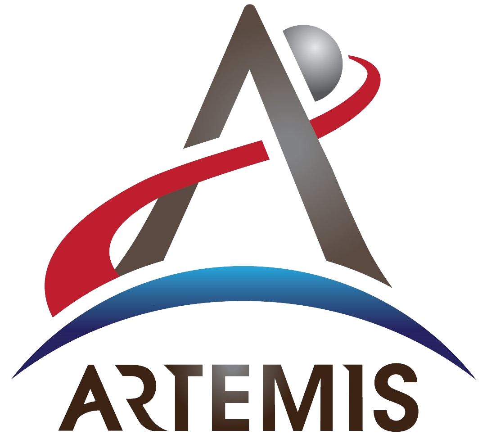
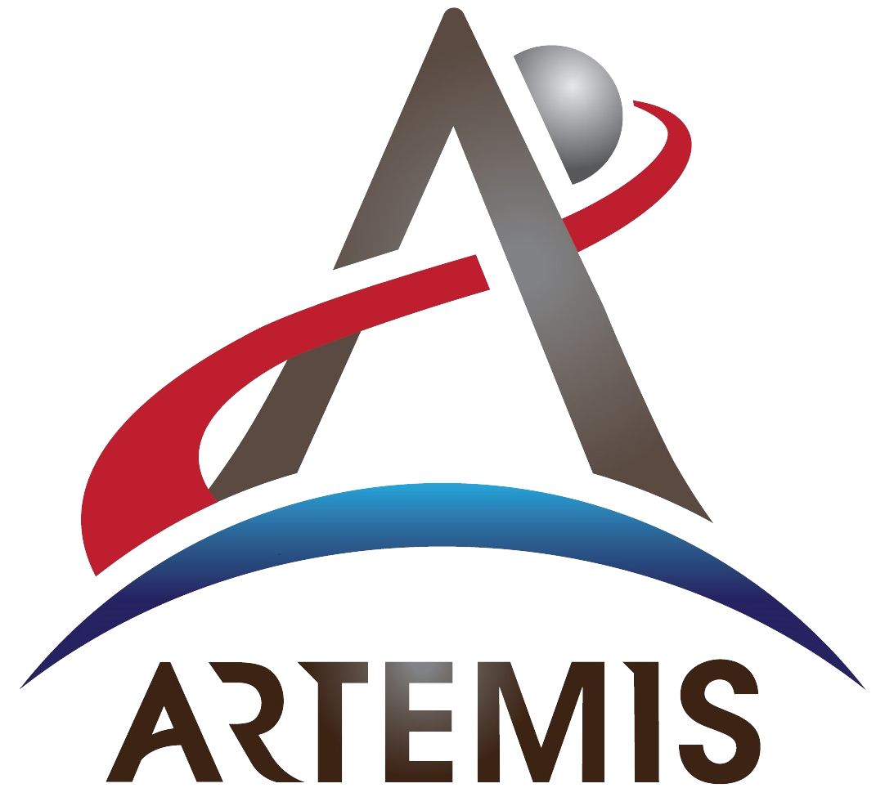
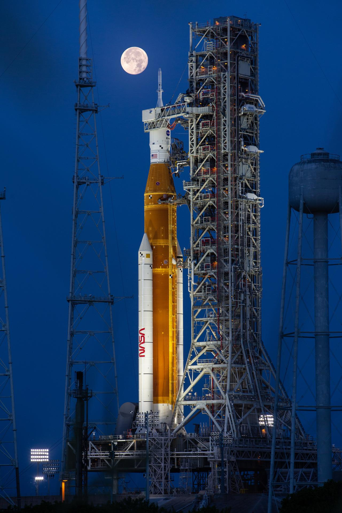

ARTEMIS I

What is Artemis I Plan?
Artemis 1, officially Artemis I, is a planned uncrewed Moon-orbiting mission,
the first spaceflight in NASA's Artemis program, and the first flight of the
agency's Space Launch System (SLS) rocket and the complete Orion spacecraft.
NASA is currently targeting a launch window between 12 and 27 November 2022